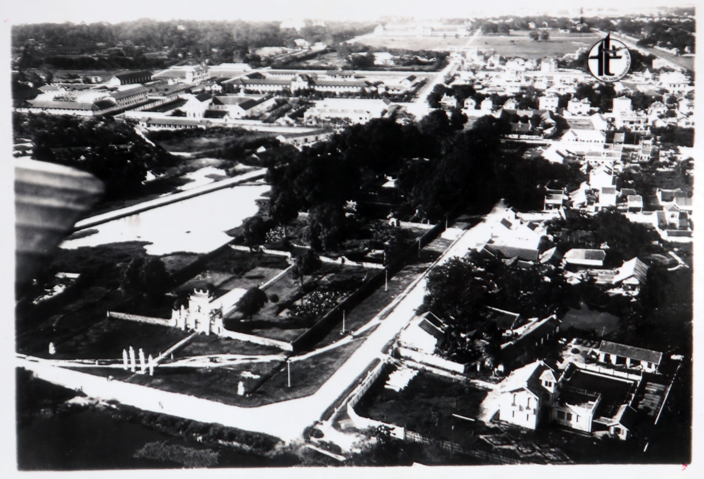
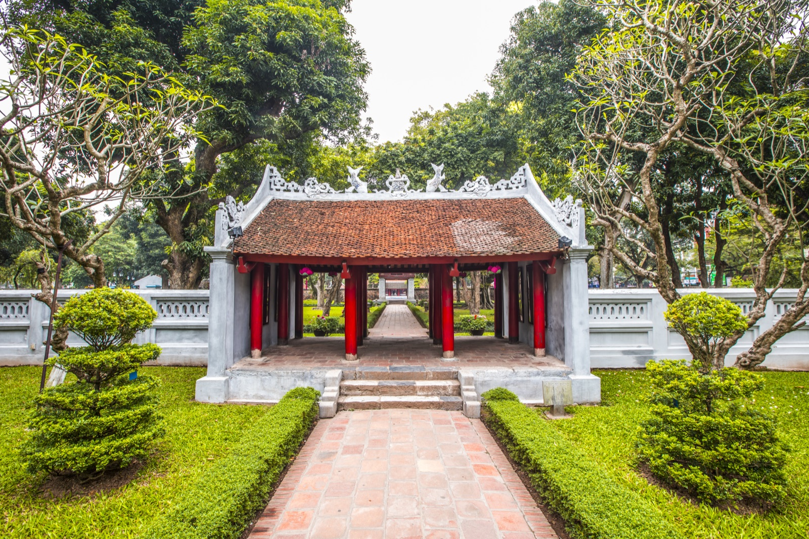
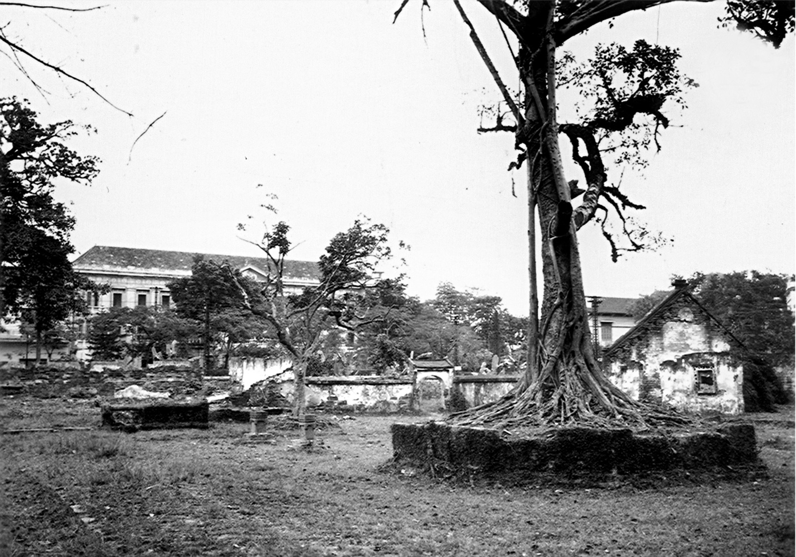

01
Lịch sử
Từ thời Lý Thánh Tông (1070) qua các triều đại Lý, Trần, Hồ, Lê, Nguyễn đến nay.
Xem chi tiết →
02
Kiến trúc
10 công trình kiến trúc tiêu biểu: Khuê Văn Các, vườn bia, Đại Thành Điện, khu Thái Học…
Xem chi tiết →
03
Danh nhân
Các Tiến sĩ, Tế tửu – Tư nghiệp và những dòng họ khoa bảng tiêu biểu.
Xem chi tiết →Ảnh
04
Hệ thống tượng thờ
Tượng thờ Khổng Tử, Tứ Phối, các vị Thánh nho và các vua.
Xem chi tiết →